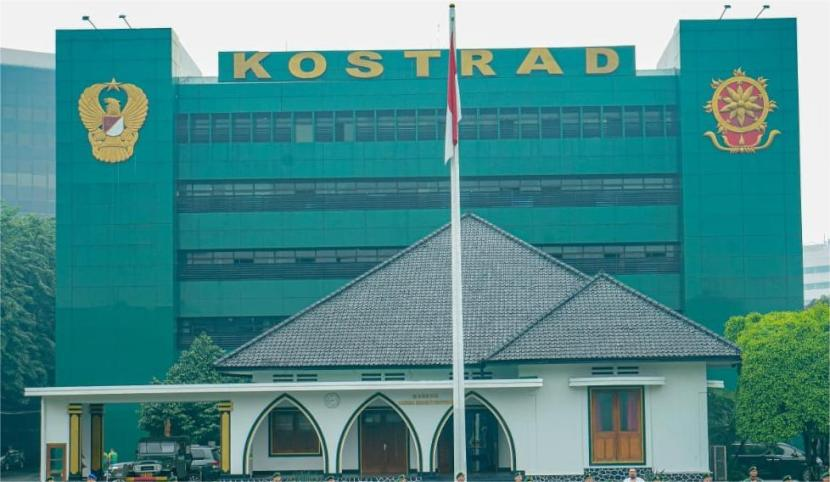

Jejak Pengabdian dan Kesetiaan Prajurit Kostrad Sepanjang Masa
Gedung bersejarah tempat Mayjen Soeharto merancang strategi penumpasan G30S/PKI. Kini menjadi museum yang menyimpan ribuan koleksi perjuangan prajurit Kostrad dari masa ke masa.
Dari Kantor Komisaris Belanda hingga menjadi saksi bisu perjuangan bangsa.

Museum Dharma Bhakti Kostrad berdiri di atas bangunan peninggalan Kantor Komisaris Belanda yang dibangun pada tahun 1870. Setelah lahirnya Kostrad pada 6 Maret 1961, gedung ini menjadi Kantor Panglima Kostrad pertama, yaitu Mayjen TNI Soeharto.
Dari gedung inilah Soeharto merancang strategi penyelamatan Presiden Soekarno, pencarian korban G30S/PKI, dan penumpasan PKI. Museum ini diresmikan pada 4 Maret 1997 oleh Presiden Soeharto dan diberi nama "Dharma Bhakti" yang berarti pengabdian terbaik prajurit Kostrad.
Arsitektur kolonial Belanda yang kokoh dan terawat.
Tempat Mayjen Soeharto memimpin Kostrad pertama kali.
Menjadi museum sejarah perjuangan dan pengabdian.
Setiap ruang menyimpan cerita dan sejarah perjuangan prajurit Kostrad.
Dinding marmer berukir nama ratusan prajurit Kostrad yang gugur dalam operasi militer dari Trikora hingga Atambua.
SelengkapnyaRuang kerja Pangkostrad I–X dengan meja rapat tempat Soeharto merancang strategi penumpasan G30S/PKI tahun 1965.
SelengkapnyaDokumentasi lengkap pengabdian prajurit Kostrad dalam latihan, operasi kemanusiaan, dan tugas militer dalam/luar negeri.
SelengkapnyaKoleksi alat komunikasi yang digunakan Kostrad saat operasi Seroja, Trikora, Dwikora, dan penumpasan G30S/PKI.
SelengkapnyaDeretan foto Pangkostrad dan Kaskostrad sepanjang masa serta diorama Batalyon 328 mengucapkan ikrar kesetiaan.
SelengkapnyaPenghargaan tertinggi bagi Pangkostrad I — Jenderal Besar TNI HM. Soeharto. Terdapat diorama evakuasi korban Lubang Buaya.
SelengkapnyaNikmati pengalaman wisata sejarah yang edukatif dan berkesan.
Berada di pusat Jakarta, dekat Stasiun Gambir, Monas, dan Istana Negara. Akses sangat mudah.
Tidak dipungut biaya masuk. Museum terbuka untuk seluruh masyarakat umum.
Tersedia pemandu museum yang siap menjelaskan sejarah setiap ruang dan koleksi secara detail.
Nonton film dokumenter G30S/PKI di Home Theater Darma Bhakti Kostrad.
Area parkir yang luas dan aman untuk kendaraan roda dua maupun roda empat.
Hanya 500 meter dari Stasiun Gambir dan dekat halte TransJakarta.
Kesan dan pengalaman mereka setelah mengunjungi Museum Dharma Bhakti Kostrad.
"Sangat terkesan dengan koleksi museum ini. Melihat langsung meja rapat tempat Pak Harto merancang strategi penumpasan G30S/PKI adalah pengalaman yang tak terlupakan. Pemandunya juga ramah dan informatif."
"Rekomendasi banget buat anak muda yang ingin belajar sejarah. Tiket gratis, lokasi di pusat kota, dan koleksinya lengkap. Home theater-nya juga seru! Pasti balik lagi."
"Mengajak siswa ke sini untuk study tour. Mereka sangat antusias melihat diorama dan koleksi alat komunikasi. Museum ini benar-benar media pembelajaran sejarah yang hidup."
Nikmati wisata sejarah dengan harga yang ramah di kantong.
Kunjungan pribadi
Min. 20 orang
Sekolah & kampus
Informasi yang sering ditanyakan sebelum berkunjung ke museum.
Museum buka setiap hari Senin hingga Jumat, pukul 08.00 – 16.00 WIB. Tutup pada hari Sabtu, Minggu, dan hari libur nasional.
Tiket masuk museum Gratis untuk seluruh pengunjung. Khusus kunjungan rombongan dan edukasi dikenakan biaya sukarela untuk pemandu dan fasilitas tambahan.
Museum berlokasi di Jl. Merdeka Timur No. 3, Gambir, Jakarta Pusat, kompleks Markas Besar Kostrad. Berjarak sekitar 500 meter dari Stasiun Gambir.
Ya, tersedia pemandu museum yang siap mendampingi dan menjelaskan koleksi. Untuk kunjungan individu, pemandu tersedia terbatas. Disarankan datang pagi hari.
Pengunjung diperbolehkan mengambil foto dan video untuk dokumentasi pribadi. Namun, dilarang menggunakan flash pada area koleksi tertentu dan tidak boleh menyentuh koleksi museum.
Pesan kunjungan rombongan atau tanyakan informasi lebih lanjut.
Jl. Merdeka Timur No. 3, Gambir, Jakarta Pusat 10110
(021) 3814 7070
bintalkostrad@gmail.com
Senin - Jumat : 08.00 - 16.00 WIB
Sabtu & Minggu : Libur
500 m dari Stasiun Gambir | Halte TransJakarta Monas